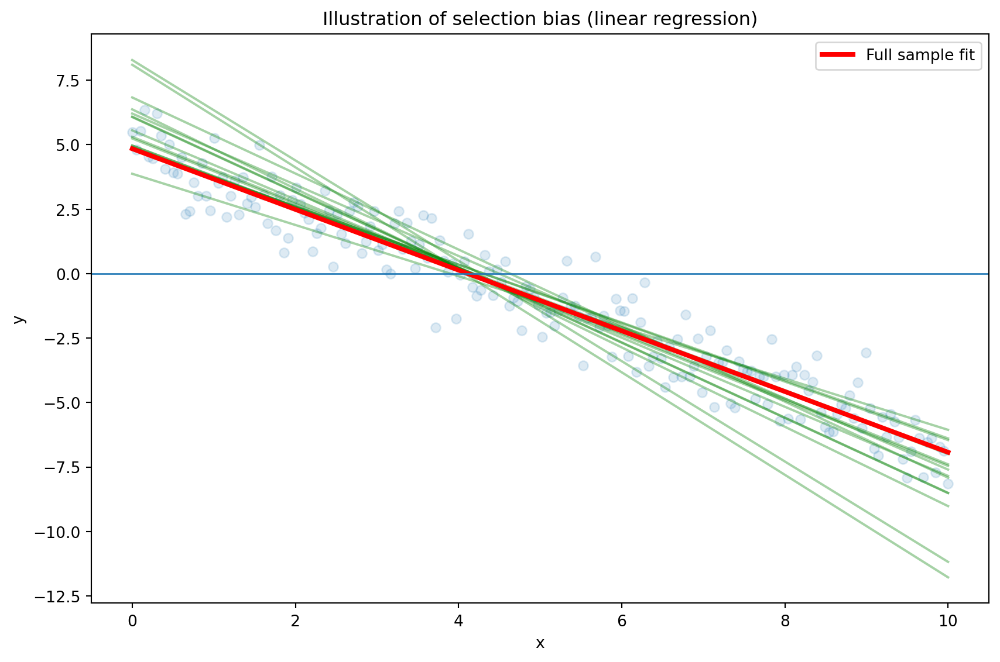

Note: Our focus will be primarily on supervised machine learning:
\[\underbrace{\text{Dataset}}_\text{Features, Targets} + \underbrace{\text{Learning Algorithm}}_\text{Model Class + Objective + Optimizer } \to \text{Predictive Model}\]


Due to the problem of overfitting, the main goal is to maximize the prediction quality and not to fit the data that is used for the model estimation as well as possible. This is equivalent to minimizing the risk that the model will have weak predictive ability.

The prediction error is influenced by three components:
Error = Bias + Variance + Noise
Bias is the inability of the used method to learn the relevant relations between the inputs and the outputs. It reflects the method quality, e.g. if a method only produces linear models.
Variance represents the deviation resulting from the sensitivity of the created model to small fluctuations in the data.
Typically, there is a tradeoff between bias and variance.
Noise is everything that arises from random variations in the data. It cannot be controlled.


Feature engineering is the process of using domain knowledge of the data to create features that make machine learning algorithms work. When done correctly, feature engineering increases the predictive power of machine learning algorithms by creating features from raw data that help facilitate the machine learning process.
A feature (variable, attribute) is depicted by a column in a dataset. Considering a generic two-dimensional dataset, each observation is depicted by a row and each feature by a column, which will have a specific value for an observation:

Features can be of two major types.
Many machine learning algorithms cannot work with categorical data directly. To convert categorical data to numbers, there exist two variants:
Label encoding refers to transforming the word labels into numerical form so that the algorithms can understand how to operate on them. Every categorical value is assigned to one numerical value, e.g. young → 1, middle_age → 2, old → 3. This only works in specific situations where you have somewhat continuous-like data, e.g. if the categorical feature is ordinal.
One hot encoding is a representation of a categorical variable as binary vectors. Every categorical value is assigned to an artificial binary variable. If the corresponding categorical value occurs in a data row the value of its binary replacement is equal to 1 else 0, e.g.

It is usual when creating dummy variables to have one less variable than the number of categories present to avoid perfect collinearity (dummy variable trap).
Datasets often contain date/time features. These features are rarely useful in their original form because they only contain ongoing values. However, they can be useful for extracting cyclical factors, such as weekly or seasonal effects. Suppose, we are given a data “flight date time vs status”. Then, given the date-time data, we have to predict the status of the flight.
But the status of the flight may depend on the hour of the day, not on the date-time. To analyze this, we will create the new feature “Hour_Of_Day”. Using the “Hour_Of_Day” feature, the machine will learn better as this feature is directly related to the status of the flight.

Suppose we are given the latitude, longitude and other data with the objective to predict the target feature “Price_Of_House”. Latitude and longitude are not of use in this context if they are alone. So, we will combine the latitude and the longitude to make one feature.
In other cases, it might be appropriate to transform latitude and longitude into categories which reflect regions, for example.